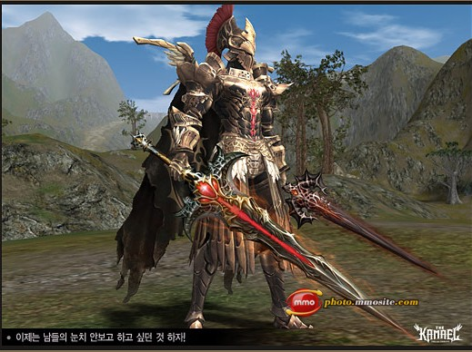

<!DOCTYPE html>
<html>
    <head>
        <meta charset="utf-8">
            <link crossorigin="anonymous" href="https://stackpath.bootstrapcdn.com/bootstrap/4.1.3/css/bootstrap.min.css" integrity="sha384-MCw98/SFnGE8fJT3GXwEOngsV7Zt27NXFoaoApmYm81iuXoPkFOJwJ8ERdknLPMO" rel="stylesheet"/>
            <link href="css/estilo.css" rel="stylesheet" type="text/css">
            </link>
        </meta>
    </head>
</html>
<body>
    <header>
        Bienvenido al mundo del Lineage II
    </header>
    <div id="main">
        <article>
            <h1>
                Preludio del Juego
            </h1>
            <div>
                <iframe allowfullscreen="" frameborder="0" height="315" id="video" src="https://www.youtube.com/embed/T4OjPsE-JH4" width="560">
                </iframe>
            </div>
            <h2>
                Historia
            </h2>
            <div>
                
                </img>
            </div>
            <p>
                Hace mucho, un tiempo atrás que no imaginas, solo había un globo en el que toda la creación estaba mezclada. No había nadie con quien compartirlo, el globo era grande, oscuro y nada.
                Durante cientos de años el globo empezó a crecer y finalmente dos poderes empezaron a formarlo. Tal como crecían, los poderes desarrollaron conocimiento, ego y los separaron en Blanca Luz y Oscuridad. La Blanca Luz estaba formada por lo femenino y se llamó así misma Einhasad. La Oscuridad estaba formada por lo masculino y se nombró Gran Kain. Estos dos entes marcaron el principio del universo y todo lo que conocemos hoy.
            </p>
            <p>
                Einhasad y Gran Kain unieron sus fuerzas para salir del globo. En este punto el globo se hizo añicos. Algunos trozos crecieron para llegar a ser Cielo, algunos disminuyeron para ser Tierra. Entre el Cielo y la Tierra había Agua y algunas partes de Tierra algunos disminuyeron para ser Tierra. Entre el Cielo y la Tierra había Agua y algunas partes de Tierra formaron Islas. El espíritu del globo se llamó Ether, por supuesto también hecho añicos con la rotura del globo. Esto trajo la variedad de animales y plantas entre los seres. Las "Criaturas del Génesis" fueron formadas a partir de este espíritu, los gigantes eran la mejor raza. Eran conocidos como los sabios, ya que su inteligencia era tan espectacular como sus fuertes cuerpos. Los gigantes prometieron mantener la confianza en Einhasad y Gran Kain ya que fueron las acciones de los dos dioses las que crearon su vida y su mundo. Einhasad y Gran Kain estaban satisfechos con los gigantes y los nombraron ser los amos de todas las criaturas. Esto fue antes de la muerte y de que el verdadero paraíso existiera.
            </p>
            <p>
                inhasad y Gran Kain dieron vida a muchos ahijados entre ellos. Los primeros cinco gozaron de la autoridad de la tierra. A la ahijada mayor, Shilen, se le encargó el Agua. Al ahijado mayor, Paagrio, el control del fuego y a la segunda ahijada, Maphr, el control de las Islas. El segundo ahijado, Sayha, se convirtió en sabio del Viento. Para la más joven, Eva, no quedaban elementos, por eso ella creó los Poemas y la Música. Mientras los otros dioses estaban ocupados con sus responsabilidades, Eva, escribía Poemas y serenaba a sus hermanos con la Música. Y así empezó la Era de los Dioses no existiendo ningún lugar en la tierra desconocido para ellos.
            </p>
        </article>
        <nav id="menu">
            <ul class="nav">
                <li>
                    <a href="index.html">
                        Inicio
                    </a>
                </li>
                <li>
                    <a href="paginas/razas.html">
                        Razas
                    </a>
                    <ul>
                        <li>
                            <a href="paginas/humanos.html">
                                Humanos
                            </a>
                        </li>
                        <li>
                            <a href="paginas/elfos.html">
                                ELfos
                            </a>
                        </li>
                        <li>
                            <a href="paginas/enanos.html">
                                Enanos
                            </a>
                        </li>
                        <li>
                            <a href="paginas/elfososcuros.html">
                                Elfos Oscuros
                            </a>
                        </li>
                        <li>
                            <a href="paginas/orcos.html">
                                Orcos
                            </a>
                        </li>
                    </ul>
                </li>
                <li>
                    <a href="paginas/galeria.html">
                        Galeria
                    </a>
                </li>
                <li>
                    <a href="paginas/ranking.html">
                        Ranking
                    </a>
                </li>
                <li>
                    <a href="paginas/contactos.html">
                        Contacto
                    </a>
                </li>
            </ul>
        </nav>
        <aside>
            Anuncio
        </aside>
    </div>
    <footer>
        Gracias por tu visita!!!
    </footer>
</body>
